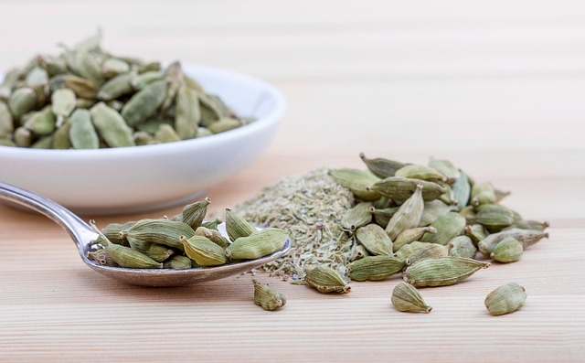
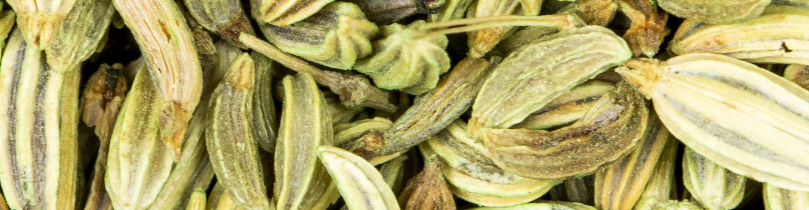
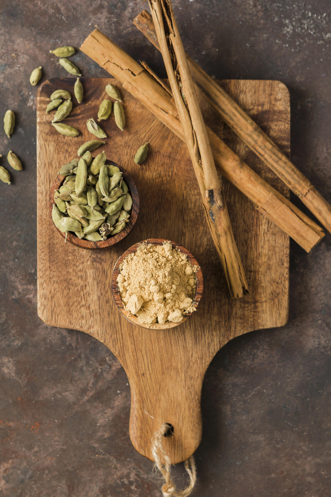
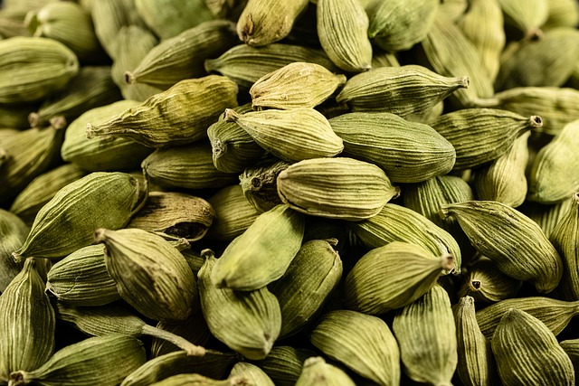
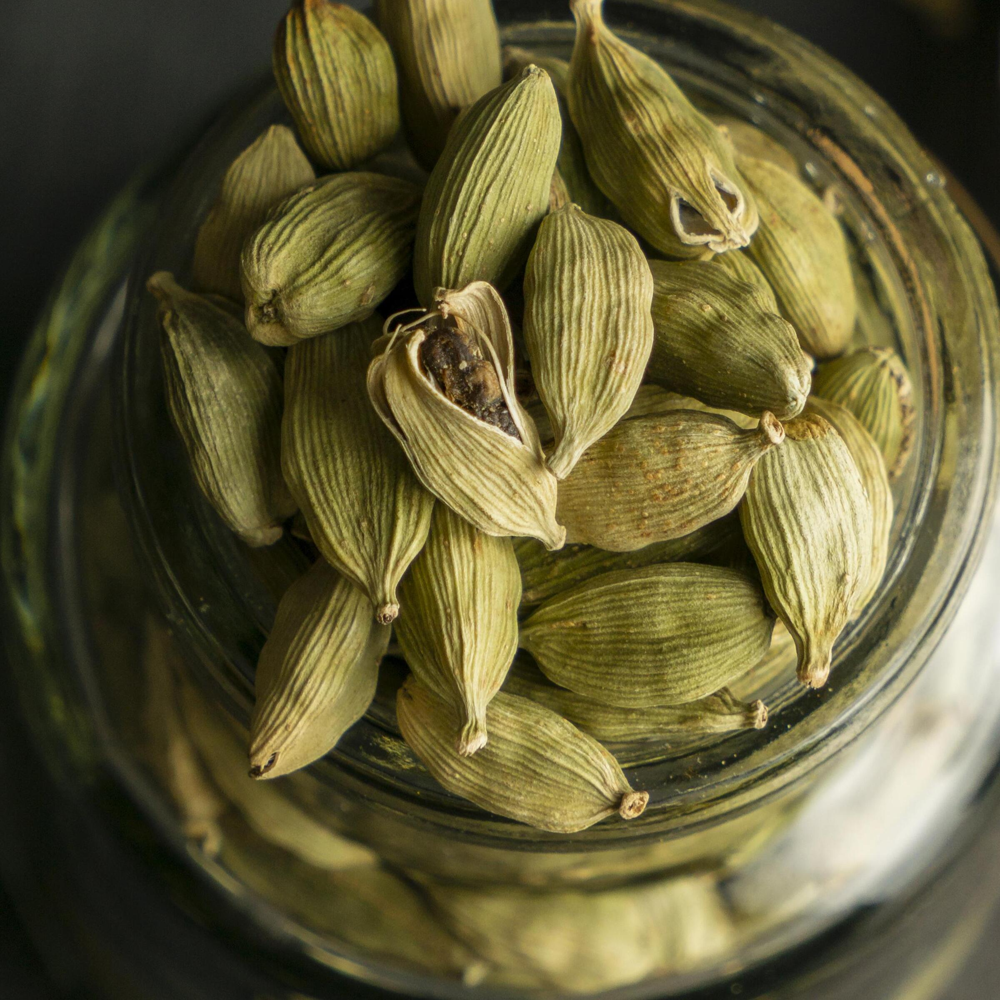

Green cardamom has a special way of transforming dishes with just a small amount. Its aroma is bright, warm, and slightly sweet, which is why so many cultures rely on it in both everyday meals and celebratory dishes. Whether you’re preparing something sweet, savory, or somewhere in between, cardamom adds a depth of flavor that’s hard to replace. This section brings together traditional uses, modern ideas, and a complete recipe you can try at home.
Traditional Uses of Green Cardamom

For centuries, cardamom has been a staple in kitchens across the Middle East, South Asia, and parts of Europe. In Arabic coffee, it’s the ingredient that gives the drink its signature fragrance. In Scandinavian baking, it’s the heart of pastries like cardamom buns and pulla bread. Indian cuisine uses it in spice blends, rice dishes, and desserts, often pairing it with cinnamon, cloves, and nutmeg.
The key to using cardamom well is understanding how it behaves. Freshly ground seeds give an intense, immediate aroma, while whole pods release flavor slowly when warmed in liquids. Both methods work beautifully depending on the dish.
Featured Recipe: Creamy Cardamom Milk Rice

This recipe highlights how cardamom can take the lead without overwhelming the rest of the ingredients. It’s simple, comforting, and perfect for breakfast or dessert.
Ingredients
- 1 cup short‑grain rice
- 2 cups whole milk
- 1 cup water
- 6 green cardamom pods
- 1 small cinnamon stick
- 1 strip of orange peel (optional)
- 2 tablespoons honey or sugar
- 1 teaspoon vanilla extract
- 1 tablespoon unsalted butter (optional)
- A pinch of sea salt
- Pistachios, raisins, or toasted coconut for topping
Instructions
- Toast the cardamom: Warm the pods in a dry pan over low heat for about a minute. When they release a light aroma, remove them from the heat, open the pods, and crush the seeds gently.
- Infuse the milk: In a pot, heat the milk, water, cinnamon stick, and orange peel. Keep the heat low so it doesn’t boil. Add the crushed cardamom and let it infuse for 5–7 minutes.
- Rinse the rice: Wash the rice under cold water until the water runs almost clear. This helps the final texture stay creamy instead of sticky.
- Cook slowly: Add the rice to the infused milk and cook on low heat, stirring often. The mixture will thicken gradually as the rice softens.
- Sweeten and flavor: When the rice is tender, stir in the honey or sugar, vanilla extract, and a pinch of salt. Add the butter if you want a richer finish.
- Adjust the consistency: If it becomes too thick, add a splash of warm milk. The ideal texture is creamy and smooth.
- Serve: Spoon into bowls and top with pistachios, raisins, or toasted coconut. Serve warm.
This recipe works because it layers flavor gently: toasted pods, slow infusion, and balanced sweetness. It’s simple but feels special.
Cardamom in Sweet Dishes

Cardamom naturally complements sweet flavors. In cakes and cookies, freshly ground seeds blend evenly into the batter. For custards, puddings, or chai‑inspired desserts, whole pods are best. Warm them in cream or milk, let the mixture rest, and strain before using. This creates a smooth, fragrant base that enhances the dessert without overpowering it.
Savory Dishes With Cardamom

Cardamom isn’t just for sweets. It adds depth to savory dishes like lamb stews, rice pilafs, and vegetable curries. A single pod added early in the cooking process can completely change the aroma of a dish. It also works well in marinades—especially when combined with yogurt, lemon, garlic, and black pepper.

Practical Everyday Tips
If you’re new to cooking with cardamom, start small. For quick meals, lightly crush one or two pods and warm them in oil before adding onions or vegetables. For drinks, avoid boiling cardamom too long; gentle heat preserves its floral notes.
A good starting ratio is:
- 2 pods for every 2 cups of liquid
- 3–4 pods for a family‑size rice or stew
For a fresher flavor, add a pinch of freshly ground seeds at the end of cooking. For deeper warmth, infuse whole pods from the beginning.
A Simple Framework for Cardamom Desserts

- Pair cardamom with flavors like vanilla, honey, pistachio, or citrus.
- For cakes, start with ¼ teaspoon of freshly ground cardamom for a mild flavor.
- For custards or panna cotta, infuse whole pods in warm cream and strain.
- A simple cardamom yogurt loaf can be made with flour, sugar, yogurt, eggs, oil, and ground cardamom, then finished with a citrus glaze.
- For cookies, mixing cardamom with a touch of cinnamon creates a warm, balanced flavor.
Meal‑Prep Ideas With Cardamom
Cardamom can elevate simple weekly meals. Toasting a couple of pods in oil before cooking rice creates a fragrant base for vegetables or grilled proteins. In soups, add a single pod while simmering and remove it before blending.
For marinades, combine yogurt, lemon juice, garlic, pepper, and a small amount of cardamom. Roasted carrots with olive oil, coriander, honey, and a hint of cardamom make a great side dish for gatherings.
The key is moderation—cardamom should enhance the dish, not dominate it.
Share Your Favorite Recipes
Do you have a favorite cardamom recipe? We'd love to hear about it! Connect with us on social media to share your culinary creations and discover recipes from other cardamom enthusiasts.
This page now contains the complete expanded recipe collection with all dessert, beverage, and savory concepts in one place.